Terminarz gabinetów
Zarządzaj grafikami lekarzy i dostępnością gabinetów. Wykrywaj konflikty w harmonogramie i szybciej znajduj wolne terminy.
Dentuvi łączy pracę recepcji, gabinetów i zaplecza z informacjami o pacjentach, płatnościach i wynikach finansowych kliniki. Tworzy jedno cyfrowe środowisko, które porządkuje najważniejsze procesy i dostarcza danych wspierających świadome zarządzanie oraz rozwój placówki.
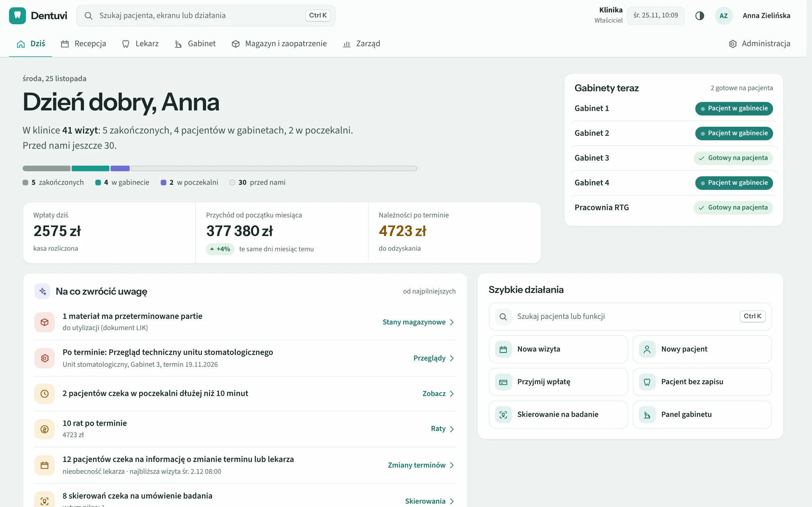
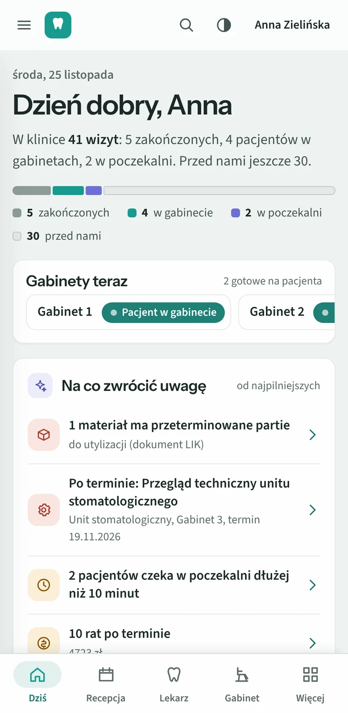
Zarządzanie kliniką
Prowadzenie kliniki to znacznie więcej niż kalendarz wizyt. To koordynacja pracy zespołu, gabinetów, materiałów, płatności i relacji z pacjentami. Gdy informacje są rozproszone, łatwo stracić czas i przeoczyć ważne sprawy. Dentuvi porządkuje sposób zarządzania: łączy codzienną pracę zespołu z danymi o pacjentach, organizacji i finansach, aby ułatwić podejmowanie decyzji i skupiać uwagę na tym, co w danej chwili wymaga podjęcia działań.
Unified Vision & Intelligence
Recepcja, gabinety i osoby zarządzające korzystają ze wspólnych, aktualnych danych. Ogranicza to konieczność ręcznego przekazywania informacji między odrębnymi programami i arkuszami.
W jednym miejscu sprawdzisz organizację dnia, dostępność gabinetów, płatności i najważniejsze informacje o działalności kliniki.
Dentuvi porządkuje sprawy wymagające uwagi, ułatwiając zespołowi ustalanie kolejności działań.
Ekran Dziś
Po zalogowaniu każdy użytkownik widzi informacje dopasowane do swojej roli: lekarz — plan wizyt, personel asystujący — zadania związane z gabinetem, recepcja — organizację przyjęć, a właściciel — najważniejsze informacje o całej klinice. Status gabinetów jest aktualizowany na bieżąco.
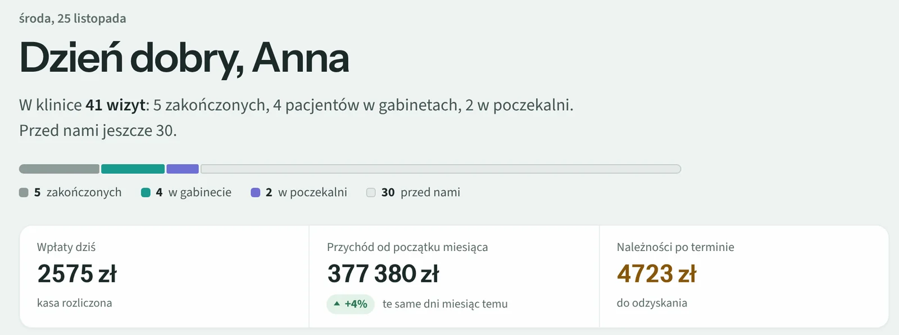
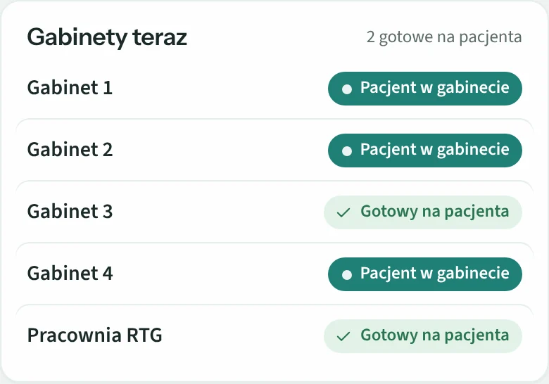
Podpowiedzi
Dentuvi porządkuje sprawy według pilności. System wskazuje między innymi pacjentów oczekujących dłużej niż przewidziano, niepotwierdzone wizyty na kolejny dzień, zaległe raty lub materiały wymagające uzupełnienia. Każda podpowiedź prowadzi do odpowiedniego widoku, z którego można przejść do dalszych działań.
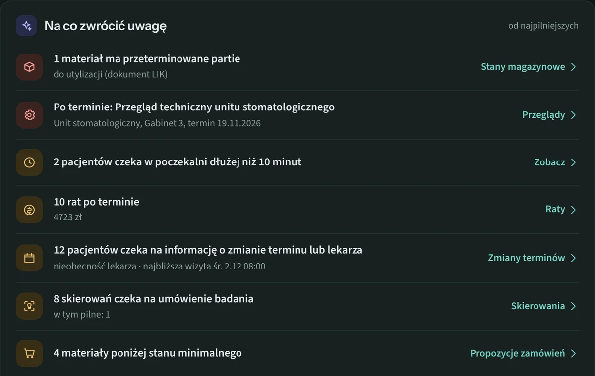
Zakres wyświetlanych podpowiedzi zależy od roli i uprawnień użytkownika.
Karta pacjenta
Karta pacjenta porządkuje informacje, które wymagają uwagi zespołu: plan leczenia oczekujący na akceptację, nieaktualny wywiad medyczny, brakującą zgodę czy zaległą płatność. Najbliższe wizyty i historię leczenia można prześledzić na jednej osi czasu.
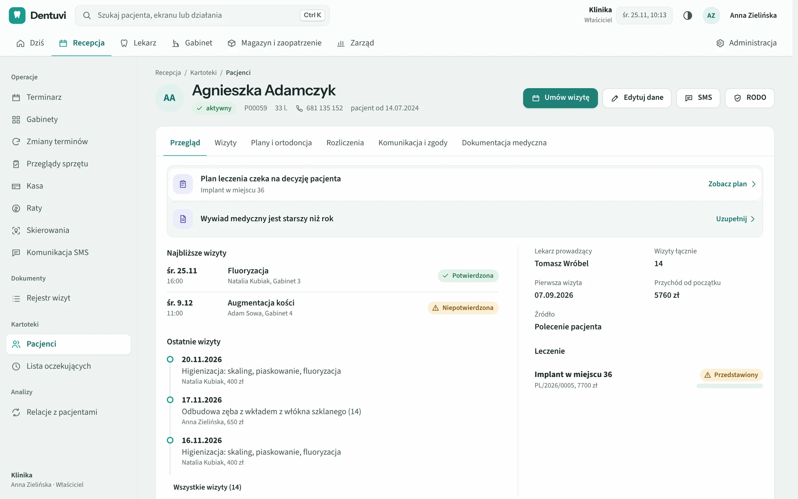
Wizyta przy fotelu
Schemat uzębienia w międzynarodowym systemie oznaczania FDI, świadczenia z oznaczeniem powierzchni zęba i plan leczenia są dostępne w jednym widoku. Po zakończeniu wizyty Dentuvi aktualizuje schemat uzębienia, rozlicza zużycie materiałów na podstawie zdefiniowanych receptur i przekazuje należność do rozliczenia w recepcji.
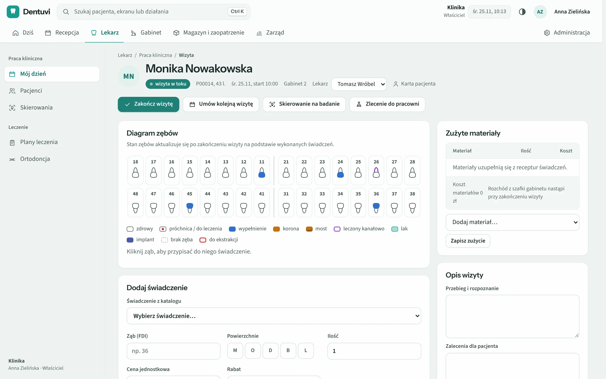
Pulpit zarządczy
Sprawdzaj przychód od początku miesiąca, prognozę na jego koniec, wykorzystanie foteli i przychód na godzinę pracy. Zyskujesz bieżący obraz kondycji kliniki i możesz szybciej identyfikować odchylenia — bez ręcznego łączenia danych z wielu źródeł.
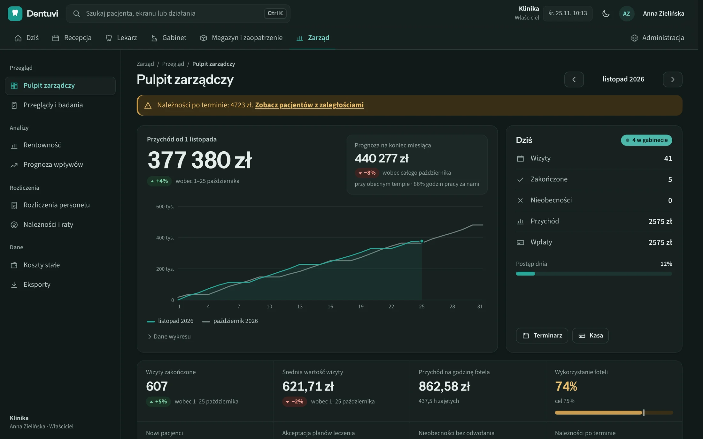
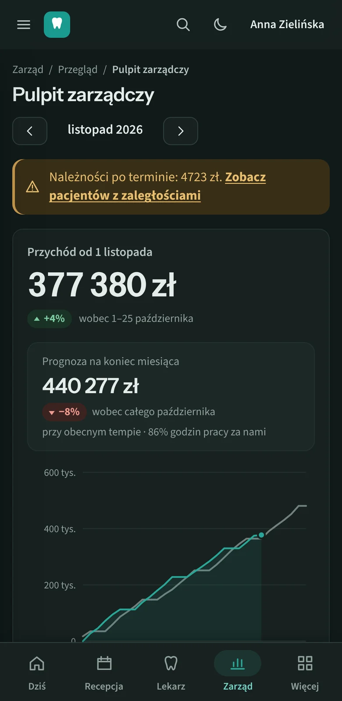
Analizuj marżę w podziale na lekarzy, gabinety i kategorie świadczeń.
Korzystaj z różnych modeli rozliczeń — od udziału w przychodzie po najem fotela.
Monitoruj strukturę wiekową należności i prognozowane wpływy.
Raty
Rozłóż płatność za plan leczenia, terapię ortodontyczną lub inną należność na raty, z uwzględnieniem wpłaty własnej. Dentuvi przypomina pacjentom o zbliżających się terminach poprzez wiadomości SMS i alarmuje o zaległościach, ułatwiając zespołowi bieżącą kontrolę rozliczeń.
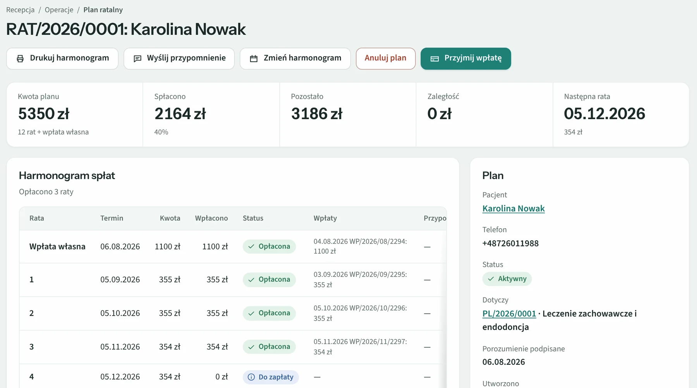
Na każdym urządzeniu
Dentuvi działa w przeglądarce na komputerze, tablecie i smartfonie — bez konieczności instalowania dodatkowego oprogramowania. Właściciel może sprawdzić podsumowanie dnia, lekarz przejrzeć swój plan wizyt, a recepcja zarządzać terminarzem — z dowolnego miejsca na świecie.
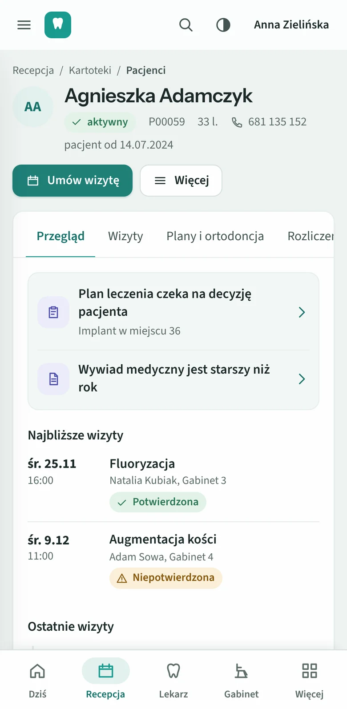
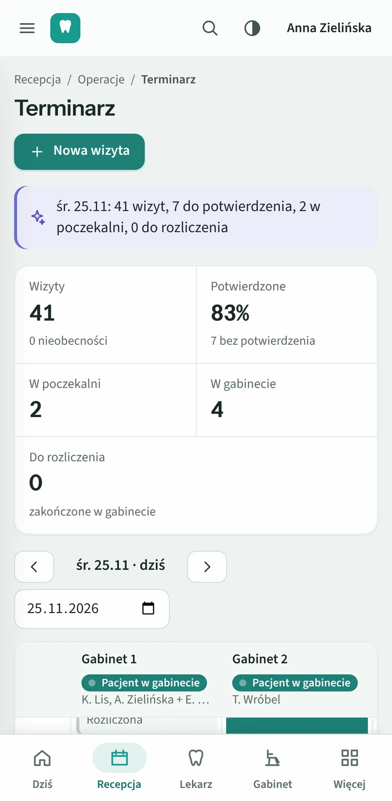
Połącz organizację pracy, obsługę pacjenta i zaplecze operacyjne w jednym systemie. Ogranicz korzystanie z wielu programów, arkuszy i papierowych notatek.
Zarządzaj grafikami lekarzy i dostępnością gabinetów. Wykrywaj konflikty w harmonogramie i szybciej znajduj wolne terminy.
Znajduj pacjentów, ekrany i działania z jednego miejsca. Skrót Ctrl+K otwiera wyszukiwarkę, która przyspiesza codzienną pracę.
Planuj pracę zespołu, urlopy i zastępstwa. Gdy lekarz jest nieobecny, Dentuvi pomaga zaproponować nowe terminy wizyt jego pacjentom.
Prowadź rejestr cykli autoklawu oraz testów Bowiego-Dicka, testów szczelności i testów biologicznych. W razie potrzeby przygotuj wydruk zapisów.
Kontroluj stany, partie i terminy ważności materiałów. Planuj uzupełnienia na podstawie stanów minimalnych i terminarza wizyt na najbliższe 14 dni.
Przygotuj gabinet do kolejnych wizyt. Korzystaj z list wyposażenia, kontroli zaopatrzenia i checklist dotyczących higieny.
Porządkuj płatności za leczenie ortodontyczne. Twórz pakiety płatności i rozkładaj należności na raty zgodnie z ustaleniami z pacjentem.
Automatyzuj przypomnienia o wizytach z linkiem do potwierdzenia oraz wiadomości dotyczące terminów płatności.
Gromadź dane dostawców i serwisów, warunki współpracy, umowy oraz historię obsługi i napraw sprzętu.
Kontroluj terminy przeglądów sprzętu i badań personelu. Korzystaj z rejestru i przypomnień, aby skuteczniej monitorować wymagane terminy.
Prywatność i bezpieczeństwo
Dane pacjentów i informacje o działalności kliniki wymagają właściwego poziomu ochrony oraz precyzyjnie nadanych uprawnień. Dentuvi wspiera ochronę danych na etapie logowania, pracy z dokumentacją, zarządzania dostępem i tworzenia kopii zapasowych.
Baza danych jest objęta jurysdykcją Unii Europejskiej.
Dodatkowa weryfikacja z użyciem aplikacji uwierzytelniającej oraz blokada konta po nieudanych próbach logowania.
Dostęp do informacji jest przypisywany do ról i zakresu obowiązków użytkowników. Każda osoba korzysta z danych niezbędnych do wykonywania swojej pracy.
Rejestruj logowania, dostęp do dokumentacji medycznej, operacje finansowe i zmiany konfiguracji.
Korzystaj z funkcji eksportu danych i anonimizacji, z uwzględnieniem ustawowych okresów przechowywania dokumentacji.
Odtwarzaj bazę danych z wybranego punktu w czasie z okresu ostatnich 30 dni.
Wdrożenie
Uruchomienie Dentuvi to uporządkowany proces, który pozwala przygotować system do sposobu działania Twojej kliniki. Konfigurujesz strukturę placówek i gabinetów, zespół, cennik, grafiki oraz zasady komunikacji i płatności. Po zakończeniu konfiguracji możesz wraz z zespołem przećwiczyć najważniejsze scenariusze na danych demonstracyjnych.
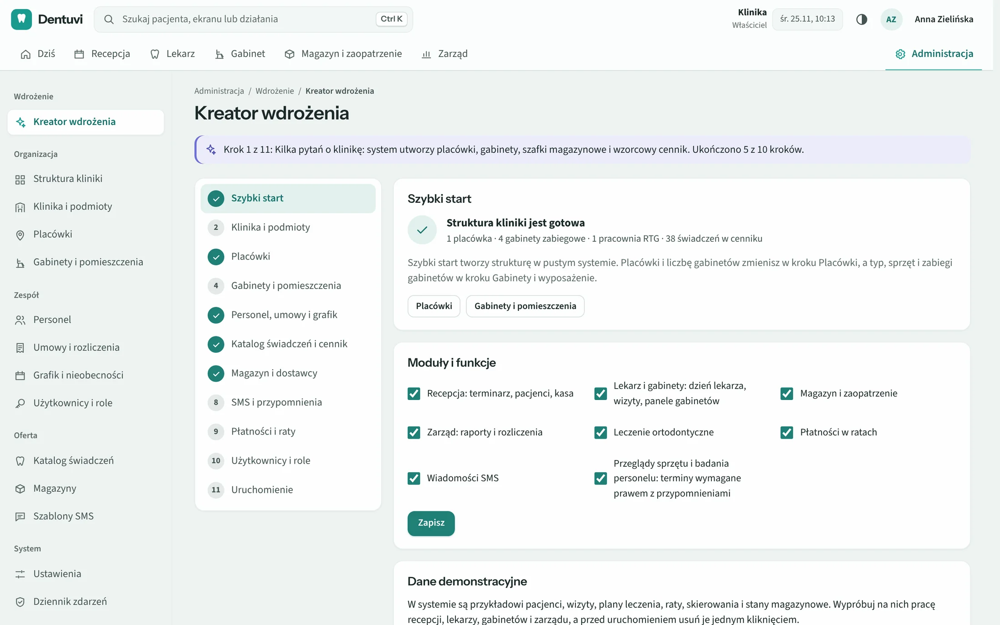
Tak. Dentuvi można dopasować do skali działalności — od pojedynczego gabinetu po klinikę z wieloma placówkami. Możesz korzystać z potrzebnych modułów i wyłączyć te, których nie używasz.
Nie. Dentuvi działa w przeglądarce na komputerze, tablecie i smartfonie. Nie musisz instalować dodatkowego oprogramowania ani utrzymywać własnego serwera.
Możesz skonfigurować różne modele współpracy, m.in. udział procentowy w przychodzie, udział po odliczeniu kosztów pracowni, progi procentowe, stawkę godzinową, wynagrodzenie stałe z premią lub najem fotela. Lekarz może na bieżąco sprawdzać swoje rozliczenie — zgodnie z przyznanymi uprawnieniami.
Tak. Dentuvi wspiera kliniki prowadzące działalność stomatologiczną i ortodontyczną. W przypadku leczenia ortodontycznego możesz korzystać z pakietów płatności i rozkładać należności na raty.
Dane są przechowywane w bazie objętej jurysdykcją Unii Europejskiej. Dostęp do nich jest kontrolowany za pomocą uprawnień przypisanych do ról, logowania dwuetapowego i dziennika zdarzeń. System umożliwia również odtworzenie bazy z wybranego punktu w czasie z okresu ostatnich 30 dni.
Proces obejmuje konfigurację struktury kliniki, gabinetów, zespołu, cennika, grafików oraz zasad komunikacji i płatności. Przed rozpoczęciem pracy zespół może przećwiczyć najważniejsze scenariusze na danych demonstracyjnych.
Cena zależy od liczby placówek, gabinetów i wybranego zakresu funkcji. Po poznaniu potrzeb Twojej kliniki przygotujemy indywidualną wycenę.
Podczas prezentacji pokażemy, jak Dentuvi łączy pracę recepcji, gabinetów i zaplecza z informacjami potrzebnymi do zarządzania kliniką. Skupimy się na obszarach, które są najważniejsze dla Twojego zespołu i wyników placówki.
Wolisz bezpośredni kontakt? Napisz na adres: kontakt@dentuvi.pl
Masz już konto? Zaloguj się do Dentuvi.